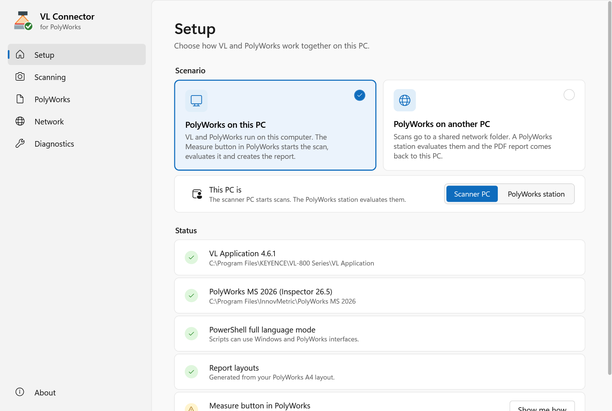
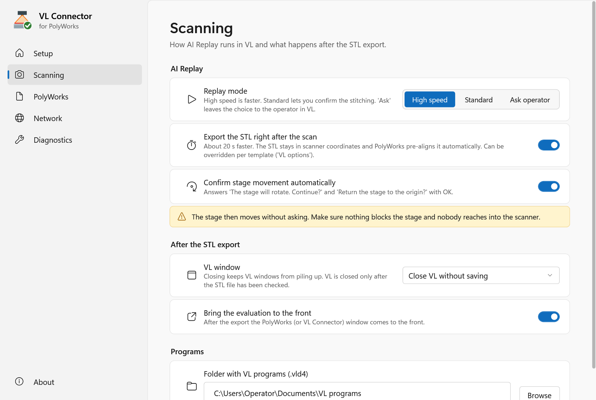
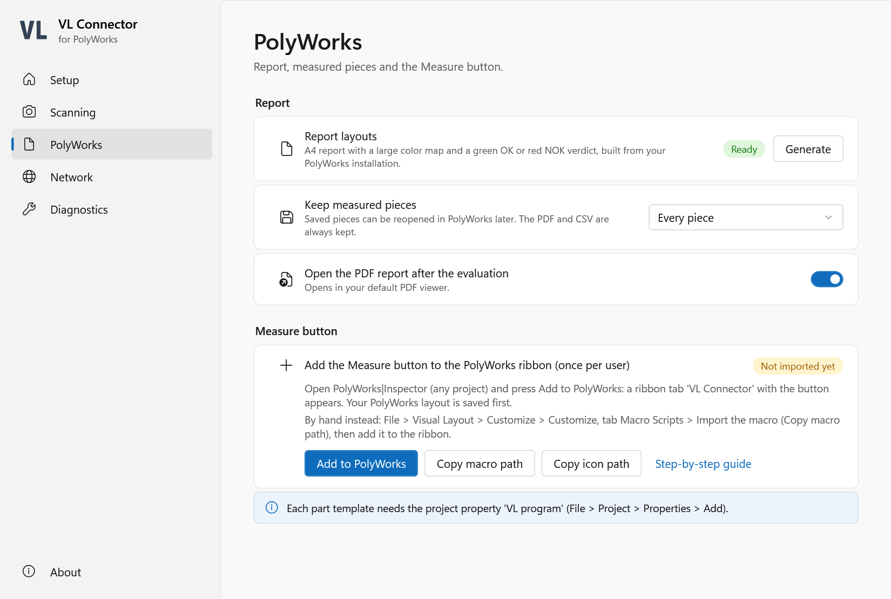
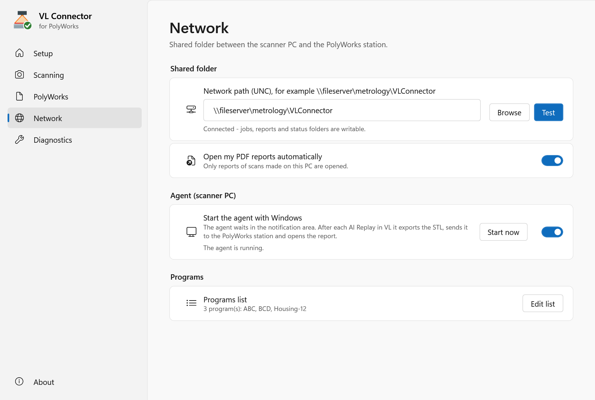

VL Connector for PolyWorks - User Guide
VL Connector starts AI Replay in the KEYENCE VL Application, exports the scan as an STL file and has PolyWorks|Inspector evaluate it against the part template: alignment to the CAD, all controls of the template, a color map and an A4 PDF report with a green OK or red NOK verdict, plus a CSV table.
Unofficial tool - not an official KEYENCE or InnovMetric product and not covered by their warranty or support. KEYENCE, VL-800 and PolyWorks are trademarks of their respective owners.
Contents
- Scenarios
- Installation
- The settings window
- Part templates in PolyWorks
- Scenario A: the Measure button
- Scenario B: network folder, station and agent
- Options per part
- Troubleshooting
- Support
1. Scenarios
A - PolyWorks on the scanner PC. The operator opens the part template in PolyWorks|Inspector and presses Measure. VL starts AI Replay for the part; the operator scans as usual. After the last position the STL goes straight to PolyWorks, which evaluates it and shows the verdict and the report.
B - PolyWorks on another PC. The scanner PC has only VL and VL Connector. The operator scans with AI Replay in VL as usual; the VL Connector agent in the background exports the STL and sends it to a shared network folder. A PolyWorks station evaluates it with the template of the VL program, and the PDF report comes back and opens on the scanner PC - only the reports of scans made on that PC.
2. Installation
You need Windows 10 or 11, the VL Application 4.6 with its English user interface (scanner PC) and PolyWorks Metrology Suite 2026 (evaluating PC). No administrator rights are needed.
- Check that the SHA-256 of the downloaded ZIP matches
SHA256SUMS.txt:Get-FileHash .\VLConnector-1.0.0.zipin PowerShell. - Extract the ZIP (right click > Extract All) and double-click Install.cmd.
- The installer checks every file against its manifest and shows the package fingerprint. Compare it with the fingerprint you received with the package, then confirm.
- It installs to
C:\ProgramData\VLConnector(another folder:Install.cmd -InstallDir D:\VLConnector), builds the report layouts from your PolyWorks installation, creates the PolyWorks button files and the Start menu entries VL Connector (settings), VL Connector agent and Uninstall VL Connector.
Update: run Install.cmd of the new version. Settings, report layouts and the imported PolyWorks buttons stay. Check an installation: Install.cmd -Verify (in the program folder) compares all files with the manifest and shows the status of the PC. Uninstall: Start menu > Uninstall VL Connector. Scans, reports and PolyWorks projects are never removed.
3. The settings window
Start menu > VL Connector. Every change is saved immediately ("Saved" appears at the bottom).

| Page | What you set |
|---|---|
| Setup | Scenario A or B; in scenario B whether this PC is the scanner PC or the PolyWorks station. The status list checks this PC and offers the next step (for example Build for missing report layouts). |
| Scanning | AI Replay mode (High speed, Standard, or let the operator choose in VL), export right after the scan, automatic confirmation of the stage movement, what happens to the VL window after the export, where VL programs are. |
| PolyWorks | Report layouts, which measured pieces to keep, opening the PDF, the Measure (or Station) button. |
| Network | The shared folder (scenario B), opening reports automatically, the agent (start with Windows), the programs list. |
| Diagnostics | Log folder, a support ZIP, versions. |
Scanning options in detail
- Replay mode - High speed is faster; Standard lets you confirm the stitching in VL; Ask operator leaves the choice to the operator in VL's own dialog.
- Export the STL right after the scan - about 20 s faster: the STL is exported in scanner coordinates and PolyWorks pre-aligns it automatically. Switch it off to export after VL's own CAD alignment.
- Confirm stage movement automatically - answers The stage will rotate. Continue? and Return the stage to the origin? with OK. Safety: the stage then moves without asking; make sure nothing blocks it and nobody reaches into the scanner.
- VL window after the export - Leave VL open, Minimize VL, Close VL without saving or Save VL data (.vld4), then close. VL is closed only after the exported STL has been checked again (complete binary STL with the exported number of triangles); otherwise VL stays open and the log says why. VL is never terminated forcibly.
- Bring the evaluation to the front - scenario A: after the export the PolyWorks window comes to the front.

4. Part templates in PolyWorks
Each part needs a template project in a PolyWorks workspace: the CAD model, the features and comparison points with their tolerances (the controls), as for any PolyWorks inspection. VL Connector measures all controls of the template and aligns the scan by automatic pre-alignment plus best-fit to the CAD.
Add these project properties to the template (File > Project > Properties > Add):
| Property | Required | Value |
|---|---|---|
VL program | yes (scenario A) | Path to the AI Replay program of the part (.vld4). |
VL options | no | Options for this part, e.g. -Mode Standard - see Options per part. |
VL reports | no | Folder for PDF and CSV of this part (otherwise the workspace folder Reports). |
VL test STL | no | Path to an STL: the Measure button evaluates it without scanning (to try a template). |
Save the template afterwards. Every measured piece is a copy of the template named <template>_<date>_<time>; the template itself is never changed. The piece gets the property VL template, so pressing Measure in an open piece starts the next part from the template again.
Report: page 1 shows a large isometric color map with the verdict (green OK / red NOK) and the summary, page 2 the table of all controls, then top and front views. The CSV has one line per control with nominal, measured, deviation, tolerances and result. The verdict is NOK when a control is out of tolerance or could not be measured.
5. Scenario A: the Measure button
Add the button to PolyWorks (once per Windows user)
- In the settings window, page PolyWorks, press Copy macro path.
- In PolyWorks|Inspector open File > Visual Layout > Customize > Customize.
- Tab Macro Scripts > Import, paste the path (
...\VLConnector\VLC_Measure_Button.pwmacro) and confirm. - Tab Customize Ribbon (or Quick Access Toolbar) > choose Macro Script Files > select VLC_Measure_Button > Add. As icon, use the file from Copy icon path (
VLC_icon_32.png).
The button only calls the installed macro, so updates of VL Connector need no new import.

Measuring
- Open the part template (or the last measured piece of the part) in PolyWorks|Inspector.
- Press Measure. A progress window shows what VL is doing; Cancel stops the scan.
- Scan the part in VL as usual (place the part, press Measure in VL for each position).
- After the last position the STL is exported, PolyWorks evaluates it (about 15-30 s) and shows the verdict. The PDF opens if this is switched on.
Keep measured pieces (page PolyWorks): Every piece, Only NOK pieces or None - the PDF and CSV are always kept. Pieces that are not kept are removed from the workspace after the report is created.
6. Scenario B: network folder, station and agent
The operator on the scanner PC works in VL as usual: AI Replay, choose the program (.vld4) in VL, scan. The VL Connector agent waits in the background and does the rest: after the last position it exports the STL (named <program>_<date>_<time>.stl), sends it to a shared folder, and opens the PDF report when the PolyWorks station has evaluated it.
Shared folder
Create a folder on a file server, e.g. \\fileserver\metrology\VLConnector, that the Windows users of the scanner PCs and of the station can read, create, change and delete files in. In the settings window of every PC: page Setup > PolyWorks on another PC, page Network > enter the folder > Test. VL Connector creates the subfolders jobs, work, reports, processed, failed and status.
Programs list
The station finds the PolyWorks template of a scan by its VL program. Page Network > Edit list opens programs.csv in the shared folder. One line per VL program, separated by semicolons; the first line is the header:
Program;Workspace;Template
ABC;D:\PolyWorks\Parts\Parts.pwk;ABC
Housing-12;D:\PolyWorks\Parts\Parts.pwk;Housing12Program: the name of the AI Replay program, i.e. the.vld4file name without.vld4.WorkspaceandTemplate: the PolyWorks workspace on the station and the template project in it.
The agent (scanner PC)
On the scanner PC set the role Scanner PC (page Setup). On page Network, switch on Start the agent with Windows and press Start now once. The agent shows the VL Connector icon in the notification area; its menu shows the state (waiting for AI Replay, station online or offline), opens the last report or the reports folder, and can pause or end the agent.

Then scan as usual. After each AI Replay the agent:
- exports the STL (with the options of page Scanning: right after the scan or after VL's alignment, and what happens to the VL window),
- saves it in
Documents\VL Connector\Scansand sends it to the shared folder - if the folder is not reachable, it waits in a local outbox and is sent automatically later, - shows a notification when the station has evaluated it (OK / NOK) and opens the PDF (setting Open my PDF reports automatically). Reports are saved in
Documents\VL Connector\Reports.
Only reports of scans made on this PC are opened. An AI Replay started by the Measure button of scenario A is never exported twice.
The PolyWorks station
On the station PC set the role PolyWorks station (page Setup). Then, once: import the station button into PolyWorks like the Measure button (page PolyWorks > Copy macro path copies VLC_Station_Button.pwmacro).
To run the station, open a PolyWorks|Inspector used only for the station (from the Workspace Manager as usual) and press VL Station. A small window shows the shared folder, the last job and a Stop button. The station takes the scans one by one, opens the template of the VL program from the programs list, evaluates the scan and sends the report back; it uses the PolyWorks settings of the station PC (keep pieces, report layouts, color scale). Keep the station PC logged on (a locked screen is fine) while scanning.
7. Options per part
The template property VL options (scenario A) overrides the settings for one part. (In scenario B the operator starts AI Replay in VL, so the settings of the scanner PC apply.) Use any of:
| Option | Values |
|---|---|
-Mode | HighSpeed, Standard, Ask |
-ExportImmediately | On, Off |
-ConfirmStageMotion | On, Off |
-AfterExport | None, Minimize, Close, SaveAndClose |
-ReturnFocus | On, Off |
-TimeoutMin | minutes to wait for the scan (default 45) |
-SettleSec | seconds to wait before the export (default 2) |
-NewWindow | always open a new VL window |
Example: -Mode Standard -AfterExport Minimize. An unknown option stops the scan with a clear message.
8. Troubleshooting
| Message or problem | What to do |
|---|---|
| The scanner is not connected | Check the scanner cable and power, then start again. |
| Another scan is running on this PC | Finish or cancel the AI Replay in VL first. |
| Project ... has no VL program | Add the project property VL program to the template (section 4). |
| VL Connector could not start (in PolyWorks) | Open the settings window: the Setup page shows what is missing. |
| PowerShell runs in ConstrainedLanguage mode | Ask IT: VL Connector needs FullLanguage mode (see Notes for IT). |
| Template ... could not be opened | The template name or workspace is wrong, or the template is open in another PolyWorks. |
| The report uses the plain PolyWorks layout | Page PolyWorks > Report layouts > Build. |
| Scenario B: no STL after AI Replay | Is the agent running (icon in the notification area)? Settings > page Network > Start now. |
| Scenario B: station offline in the agent menu | Start the station (VL Station button) and check the shared folder on the station PC. |
| Scenario B: no report arrives | The station is busy or stopped; the scan is evaluated as soon as it runs. |
| Scenario B: not in the programs list | Add the VL program (the .vld4 name without extension) to programs.csv. |
| VL does not react to VL Connector | VL must show its English user interface; close extra dialogs in VL. |
Logs: %LOCALAPPDATA%\VLConnector\logs (page Diagnostics > Open folder), one file per day and part of VL Connector, kept for 30 days.
9. Support
Contact your local sales engineer, who forwards questions to the local technical team. Please attach the support ZIP: settings window > Diagnostics > Create ZIP (logs, settings, status and file list; no scans or reports).